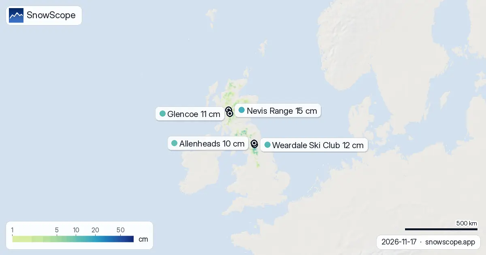

UK snow cover surged 6,810 km² in seven days
Britain's snow-covered land quadrupled in a week, climbing from 1,570 km² to 8,380 km². The North Pennines, Southern Uplands and Cairngorms all received substantial falls, with the highest elevations now fully blanketed.
See the live snow forecast for Nevis Range in the SnowScope appSnow depth, powder alerts and the 3D map, free.
A week of rapid growth
The expansion has been striking. Seven days ago, only 1,570 km² of the UK lay under snow; today that figure stands at 8,380 km². Yesterday alone, the coverage jumped by 2,640 km², or roughly 46 per cent. This represents the kind of swing that transforms the mountains from bare rock to skiable terrain in a matter of days.
What drove the change was a succession of systems bringing persistent precipitation to higher ground. The North Pennines have accumulated 27 cm in the past 72 hours—by far the largest regional total—while the Southern Uplands collected 20 cm and the Cairngorms 18 cm. Even moderate peaks like those around Allenheads, sitting at 447 m, have gathered 27 cm, a sign of how low the snow fell.
| Resort | Snow depth | New snow, 72 h | Coming, next days | Top |
|---|---|---|---|---|
| Nevis Range | 15 cm | 5 cm | 3 cm | 1,190 m |
| Weardale Ski Club | 12 cm | 19 cm | 0 cm | 658 m |
| Glencoe | 11 cm | 7 cm | 3 cm | 1,079 m |
| Allenheads | 10 cm | 27 cm | 0 cm | 447 m |
| Yad Moss | 10 cm | 16 cm | 0 cm | 719 m |

Where the snow sits now
Snow coverage is not uniform across the country. At low elevations below 500 m, only 14 per cent of the land is covered and depths average just 1 cm. Between 500 and 1,000 m, coverage climbs to 42 per cent with an average of 2 cm. Above 1,000 m, the picture changes entirely: the entire area is snow-covered, with a mean depth of 8 cm. The snow line currently sits near 700 m.
This elevation dependence explains why the mountains are now white while the valleys remain green. The 22 per cent white share across the whole modelled area reflects the concentration of snow on the high ground, where it will stay longest.

Mountain by mountain
Among the 30 ski areas we monitor, 11 now carry snow. Nevis Range leads with 15 cm at its summit (1,190 m), followed by Weardale Ski Club at 12 cm, Glencoe at 11 cm, and both Allenheads and Yad Moss at 10 cm. The disparity reflects the patchy nature of the recent falls and the varying altitudes of the terrain.
Weardale Ski Club and Allenheads benefited most from the past 72 hours, gaining 19 cm and 27 cm respectively. Nevis Range, sitting higher and further north, accumulated 5 cm in the same window—less dramatic but on a more substantial base. All three leading areas received little or no new snow in the forecast for the next three days, though Nevis Range may see 3 cm by 20 November.
What's coming next
The heaviest single day lies ahead: our model predicts 5 cm will fall on 18 November, primarily on higher slopes. Over the next three days, most areas will see marginal additions or none at all. The outlook extends to seven days hence, when a further 11 cm is possible—modest by recent standards, but enough to maintain or build on current depths if it falls at altitude.
The near term (three days) is quieter almost everywhere. Nevis Range and Glencoe may each receive 3 cm; most other sites show no new material in the forecast window. This represents a pause after several days of steady accumulation.
What the bands tell us
The layered picture by elevation is instructive. Ground above 1,000 m is fully snow-covered and primed for winter; between 500 and 1,000 m, partial cover means conditions are variable; below 500 m, snow is thin and patchy. Any skier venturing below 700 m should expect mixed terrain with rock and grass visible. The bands suggest that consistent skiing is possible only on the high peaks and plateaus—and that remains true only while this snow persists and no thaw occurs.
Early season snow at these depths, though welcome, can be fragile. Ground temperatures and solar input will play major roles in whether cover survives or retreats. The recent rapid gain is notable; whether it proves durable will depend on what follows.
The regional hierarchy
The North Pennines, Southern Uplands and Cairngorms have established themselves as the snowiest zones. The North Pennines' lead—with 27 cm in 72 hours—reflects its exposure to westerly flow and the intensity of recent systems. The Cairngorms, though somewhat drier over the same period (18 cm), sit higher on average and started with better accumulation, so absolute depths there remain deep. The Southern Uplands occupy the middle ground, with good recent totals but lower mean altitude.
Neighbouring territories present a stark contrast. Ireland currently shows 0 per cent snow cover and no measurable snow at its ski area. Norway, by contrast, is 87 per cent white and saw 170 cm at Riksgränsen. The UK sits in between—a brief window of November snow on mountains that often remain bare until late December or later.
Tips for skiers
- Check the official avalanche forecast before venturing off-piste in the Cairngorms, North Pennines or Southern Uplands; recent heavy falls combined with existing ground pose a hazard.
- Head for elevations above 1,000 m for reliable snow; below that, expect patchy cover and hidden rocks.
- Nevis Range holds the deepest base (15 cm) and the highest summit (1,190 m); it offers the safest early-season option in terms of snow persistence.
- Expect Friday 18 November to bring the most significant fresh snow; plan your ascent accordingly if you are climbing to higher ground.
- Bring crampons and an ice axe if you are exploring the mountains; thin snow on steep slopes or rock can shift underfoot.
About these numbers
Resort snow depths are the deepest snow on the resort's upper slopes from the SnowScope snow model (about 1 km, run of 17 November); they are estimates for an area, not a measurement at one point. Station values are measurements on the date shown. Forecasts can change. Always read the official avalanche bulletin before going off-piste.
Cite this report
For research, teaching or the press: the numbers and charts are free to reuse under CC BY 4.0 with this citation.
SnowScope (2026), UK snow cover surged 6,810 km² in seven days, https://snowscope.app/blog/en/2026/11/uk-snow-report-17-november-2026.html, accessed 2026-11-17
SnowScope (Atlas Labs). (2026, November 17). UK snow cover surged 6,810 km² in seven days. SnowScope snow reports. https://snowscope.app/blog/en/2026/11/uk-snow-report-17-november-2026.html
BibTeX
@misc{snowscope2026uksnowreport17november20,
author = {{SnowScope (Atlas Labs)}},
title = {UK snow cover surged 6,810 km² in seven days},
year = {2026},
month = nov,
howpublished = {\url{https://snowscope.app/blog/en/2026/11/uk-snow-report-17-november-2026.html}},
note = {Published 2026-11-17 12:53 UTC; accessed 2026-11-17}
}· CC BY 4.0 · Methods, data and tools →
Nevis Range: snow and temperature by height, this winter vs last (tools) →
Follow Nevis Range
Free: a message when fresh snow is coming, and the forecast every morning.
More snow reports

Valloire-Valmeinier offers 131 km of runs and a 98 % chance of 30 cm of snow at mid-mountain by mid-December.

A walk-through of the Sella Ronda from Sëlva in Val Gardena: Gardena, Campolongo, Pordoi and Sella passes in order, with our snow history of 46 past winters.

Steamboat, Colorado, for families: what works for toddlers, school-age kids, teens and parents, with the snow of 46 past winters at three heights.